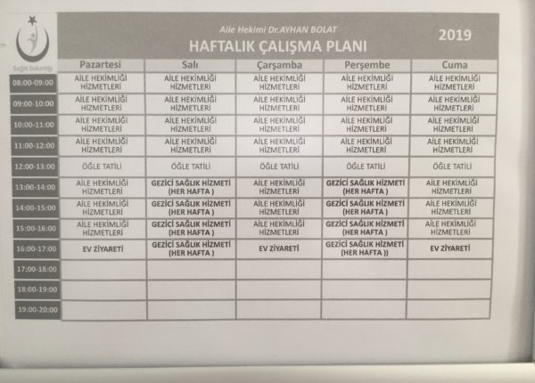
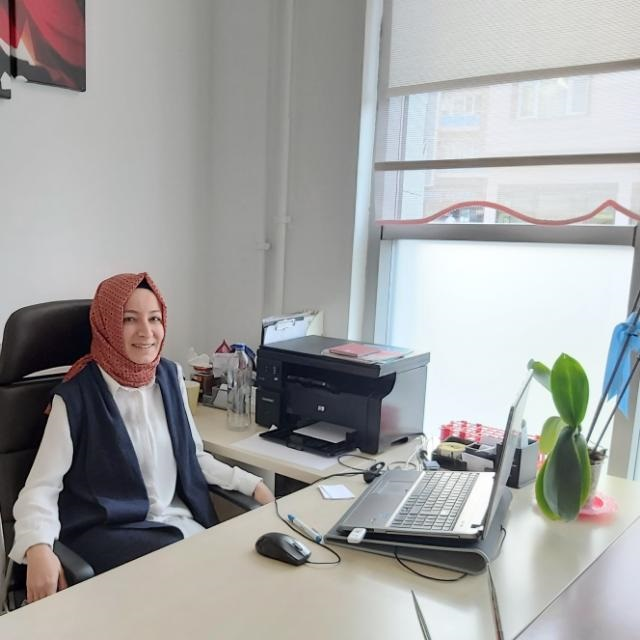

Doktor Listesi ve Bilgileri:
-Dr.Feyza ÇOLDAŞ 19.05.12 Nolu aile hekimi
İletişim Bilgileri:
Alacahöyük Aile Sağlığı Merkezi No:113/4
Alacahöyük Beldesi/ALACA/ÇORUM
Tel:0 533 052 08 52
Çalışma Saatleri

Kurumsal
Kurumumuzda, sahip olduğumuz etik değerleri muhafaza ederek, bizden sağlık hizmeti talep eden bireylerin beklentilerini en iyi şekilde karşılamaya, insana,saygı duymayı ve bundan dolayı hastalarımıza gerekli ilgi ve özeni göstermeye gayret ediyoruz.
Kadromuz

Dr. Feyza ÇOLDAŞ
Aile Hekimi : Dr.Feyza ÇOLDAŞ
Birim Kodu : 19.05.12 Nolu Aile Hekimi
Aile Sağlığı Elemanı :
Hemşire Şeyma ŞENTÜRK
Telefon : 0533 052 08 52
Blog
-
ANNE SÜTÜ VE EMZİRME
Anne sütü; yenidoğanda optimum büyüme ve gelişme için gerekli olan tüm sıvı, enerji ve...
-
ANNE ADAYLARI VE HAMİLE KADINLARDA BESLENME
Ülkemizde “gebelik öncesi ve gebelik döneminde yetersiz ve dengesiz beslenme” anne ve bebek ölümlerinde...
-
GRİP SALGINI VE BESLENME
Kış mevsiminin yaşandığı şu günlerde havaların soğumasıyla birlikte başta küresel grip salgını olmak üzere...
-
ANEMİ
Kansızlık olarak bildiğimiz rahatsızlık aslında vücuttaki kan miktarının az olması değil, kanımızdaki...
-
DİYABET
Pankreastan salgılanan insülin hormonunun yetersizliği veya insulinin etkisine dokularda...